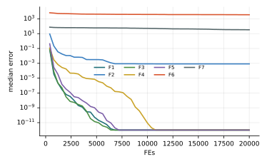

Chương 8 · Trí tuệ bầy đànChapter 8 · Swarm Intelligence
Tối ưu bầy diều hâu HarrisHarris Hawks OptimizationHarris Hawks Optimization — HHOHHO — a coordinated surprise pounce
Châu Văn Vân · PTITHCM
Mục tiêu bài họcLearning objectives
Sau chương này, bạn có thểAfter this chapter you will be able to
- Giải thích chiến thuật “vồ bất ngờ” và năng lượng thoát thân E.Explain the “surprise pounce” and the escaping energy E.
- Viết hai quy tắc khám phá và bốn quy tắc khai thác.Write the two exploration rules and the four exploitation rules.
- Mô tả bước lao nhanh với bước Lévy và cơ chế chọn tham lam.Describe rapid dives with Lévy steps and the greedy choice.
- So sánh HHO với các thuật toán khác theo số lần đánh giá hàm.Compare HHO with other algorithms by evaluation count.
Tổng quanOverview
Diều hâu Harris săn mồi theo nhómHarris's hawks hunt as a team
- Do Heidari và cộng sự đề xuất năm 2019.Proposed by Heidari et al. in 2019.
- Diều hâu Harris là một trong số ít loài chim săn mồi phối hợp theo nhóm: nhiều con cùng lao vào con thỏ từ các hướng khác nhau.Harris's hawks are among the few raptors that hunt cooperatively: several birds swoop on a rabbit from different directions.
- Chiến thuật “vồ bất ngờ” thay đổi theo sức chạy thoát của con mồi: còn khỏe thì vây lỏng, đã đuối thì siết chặt.The “surprise pounce” adapts to the prey's strength: loose siege while it is fresh, a tight one once it tires.
- HHO biến năng lượng thoát thân của con mồi thành công tắc chuyển giữa khám phá và khai thác.HHO turns the prey's escaping energy into the switch between exploration and exploitation.
Ý tưởng cốt lõiCore idea
Năng lượng thoát thân E quyết định chiến thuậtThe escaping energy E decides the tactic
- E0: sức lực ban đầu, rút lại mỗi vòng cho từng diều hâu.: initial energy, redrawn every iteration for every hawk.
- |E| ≥ 1: thỏ còn khỏe, diều hâu đi khám phá.|E| ≥ 1: the rabbit is fresh, hawks explore.
- |E| < 1: thỏ đã mệt, diều hâu khai thác bằng bốn kiểu vây.|E| < 1: the rabbit tires, hawks exploit with four siege types.
Pha khám phá · |E| ≥ 1Exploration · |E| ≥ 1
Đậu chờ ở chỗ ngẫu nhiên, hai cách chọn với xác suất bằng nhauPerch at random spots, two equally likely rules
X(t+1) = (Xrabbit(t) − Xm(t)) − r3(LB + r4(UB − LB)) nếuif q < 0.5
- q ≥ 0.5: đậu ở vị trí ngẫu nhiên gần một diều hâu chọn ngẫu nhiên.q ≥ 0.5: perch at a random spot near a randomly chosen hawk.
- q < 0.5: đậu dựa trên con thỏ và vị trí trung bình Xm = (1/N) Σ Xi của cả nhóm.q < 0.5: perch based on the rabbit and the group's mean position Xm = (1/N) Σ Xi.
- r1 … r4, q ~ U(0, 1); ; LB, UB: cận dưới và cận trên của miền tìm kiếm.: lower and upper bounds of the search space.
Pha khai thác · |E| < 1Exploitation · |E| < 1
Bốn kiểu vây, chọn theo |E| và cơ hội thoát rFour sieges, chosen by |E| and the escape chance r
Pha khai thác · r ≥ 0.5Exploitation · r ≥ 0.5
Vây mềm và vây cứngSoft and hard besiege
Vây mềmSoft besiege · |E| ≥ 0.5
J: sức nhảy ngẫu nhiên của thỏ trong lúc chạy trốn.J: the rabbit's random jump strength while fleeing.
Vây cứngHard besiege · |E| < 0.5
Thỏ quá mệt nên diều hâu hầu như không cần vòng quanh: bước nhảy tỉ lệ thuận với |E| và rất ngắn.The rabbit is too tired to need circling: the step is proportional to |E| and very short.
Pha khai thác · r < 0.5Exploitation · r < 0.5
Lao nhanh liên tiếp: thử một bước, nếu chưa tốt thì thử bước LévyProgressive rapid dives: try a step, then a Lévy step
X̃ = X khi vây mềm; for the soft version; X̃ = Xm khi vây cứng. for the hard version. S: vector ngẫu nhiên kích thước : random vector of size D.
Bước Lévy phần lớn rất ngắn, thỉnh thoảng có một bước rất dài, giống đường chạy zíc zắc của con thỏ:A Lévy step is mostly tiny with the occasional very long jump, like the rabbit's zig-zag escape:
u, v ~ N(0, 1); σ là hằng số tính từ hàm Gamma theo β. Nếu cả Y và Z đều không tốt hơn, diều hâu đứng yên.; σ is a constant computed from the Gamma function of β. If neither Y nor Z improves, the hawk stays put.
Các bướcSteps
Các bước của HHOHHO step by step
Heidari và cs. (2019); các lần đánh giá Y, Z được tính vào ngân sách.Heidari et al. (2019); the Y, Z evaluations are counted in the budget.
- Khởi tạo n diều hâu; con mồi = lời giải tốt nhất.Initialize n hawks; the rabbit = best solution.
- Mỗi diều hâu tính năng lượng E = 2E0(1 − t/T), E0 ~ U(−1, 1).Each hawk computes energy E = 2E0(1 − t/T), E0 ~ U(−1, 1).
- |E| ≥ 1: khám phá (đậu ngẫu nhiên theo con khác hoặc theo trung bình bầy).|E| ≥ 1: exploration (perch by another hawk or by the swarm mean).
- |E| < 1: một trong bốn kiểu vây theo r và |E|.|E| < 1: one of four besiege strategies chosen by r and |E|.
- Cập nhật con mồi; lặp đến hết ngân sách.Update the rabbit; repeat until the budget is spent.
2 – 5 vòng lặp chínhmain loop
Thuật toánAlgorithm
Lưu đồFlowchart
Tham sốParameters
Tham số của HHOHHO parameters
| Tham sốParameter | Ý nghĩaMeaning | Giá trị thường dùngTypical value |
|---|---|---|
| E0 | Năng lượng ban đầu, ngẫu nhiên mỗi lầnInitial energy, random each time | U(−1, 1) |
| J | Sức nhảy của con mồiRabbit jump strength | 2(1 − r5) |
| β | Chỉ số bước LévyLévy step index | 1.5 (hệ số 0.01) |
HHO không có tham số cần chỉnh ngoài n và T.HHO has no parameters to tune besides n and T.
Thuật toán HHOThe HHO algorithm
Mã giảPseudocode
Tham số người dùng chỉ còn N và T; mọi chuyển pha đều do E và r quyết định.The user only sets N and T; every phase switch is driven by E and r.
- Khởi tạo N diều hâuInitialize N hawks
- for t = 1 … T: đánh giá, Xrabbit ← con tốt nhấtevaluate, Xrabbit ← the best
- for mỗi diều hâueach hawk: E0, J, E
- if |E| ≥ 1: khám pháexplore
- else if r ≥ 0.5, |E| ≥ 0.5: vây mềmsoft besiege
- else if r ≥ 0.5, |E| < 0.5: vây cứnghard besiege
- else if r < 0.5, |E| ≥ 0.5: vây mềm + lao nhanhsoft besiege + dives
- else: vây cứng + lao nhanhhard besiege + dives
- return Xrabbit
Mô phỏngSimulation
10 diều hâu và một con thỏ10 hawks and one rabbit
Cùng địa hình với các chương khác. Màu của mỗi diều hâu cho biết chiến thuật nó vừa dùng; hình vuông cam là con thỏ.Same landscape as the other chapters. Each hawk's colour shows the tactic it just used; the orange square is the rabbit.
Ví dụ tính tayWorked example
Năng lượng và vây mềmEnergy and soft besiege
- E0 = −0.6, t/T = 0.25: E = −0.9; |E| < 1 nên khai thác, |E| ≥ 0.5 nên vây mềm (nếu r ≥ 0.5).E0 = −0.6, t/T = 0.25: E = −0.9; |E| < 1 so exploit, |E| ≥ 0.5 so soft besiege (if r ≥ 0.5).
Một chiềuOne dimension
- Xrabbit = 1, X = 3, J = 1: ΔX = −2.Xrabbit = 1, X = 3, J = 1: ΔX = −2.
- X(t+1) = −2 + 0.9 · |1 − 3| = −0.2.X(t+1) = −2 + 0.9 · |1 − 3| = −0.2.
- Công thức gốc dùng ΔX (một độ dời) làm vị trí mới, nên bị kéo về gần 0: một nguồn gây thiên lệch gốc tọa độ.The original formula uses ΔX (a displacement) as the new position, pulling it toward 0: one source of origin bias.
Ứng dụngApplications
Ứng dụng của HHOHHO applications
HHO là một trong những thuật toán được trích dẫn nhiều nhất từ 2019.HHO is one of the most cited algorithms since 2019.
Chọn đặc trưngFeature selection
BHHO cho dữ liệu y sinh.BHHO for biomedical data.
Năng lượngEnergy
Tham số pin mặt trời, điều độ.Solar-cell parameters, dispatch.
Học sâuDeep learning
Chỉnh siêu tham số CNN.CNN hyper-parameter tuning.
ẢnhImaging
Phân ngưỡng đa mức.Multi-level thresholding.
Thực nghiệm · HHOExperiment · HHO
Kết quả trên bộ 7 hàm, D = 10, 30 lần chạyResults on the 7-function suite, D = 10, 30 runs
| HàmFunction | Trung bìnhMean | Độ lệchStd | Trung vịMedian | so PSOvs PSO |
|---|---|---|---|---|
| F1 · Sphere | 0 | 0 | 0 | ≈ |
| F2 · Rosenbrock | 2.29e−3 | 3.27e−3 | 8.41e−4 | + |
| F3 · Rastrigin | 0 | 0 | 0 | + |
| F4 · Ackley | 0 | 0 | 0 | + |
| F5 · Griewank | 0 | 0 | 0 | + |
| F6 · Shifted Sphere | 3.53e+3 | 1.75e+3 | 3.54e+3 | − |
| F7 · Shifted Rastrigin | 3.66e+1 | 1.25e+1 | 3.37e+1 | − |
- Sai số f(xbest) − f* sau 20 000 lần đánh giá; n = 30; tham số mặc định của bài gốc; giá trị < 10−8 ghi là 0.Error f(xbest) − f* after 20,000 evaluations; n = 30; default parameters of the original paper; values < 10−8 shown as 0.
- Cột cuối: Wilcoxon rank-sum với PSO (α = 0.05): + tốt hơn, − kém hơn, ≈ không khác biệt.Last column: Wilcoxon rank-sum vs PSO (α = 0.05): + better, − worse, ≈ no difference.
- Xếp hạng Friedman trung bình: 6.79, đứng thứ 5/18 trong 18 thuật toán của giáo trình.Average Friedman rank: 6.79, position 5/18 among the textbook’s 18 algorithms.
- Thiên lệch gốc tọa độ: trung vị F1 = 0 nhưng F6 (cùng hàm, dịch tâm) = 3.54e+3. Kết quả tốt trên F1 phần lớn do tối ưu nằm tại 0.Origin bias: median F1 = 0 but F6 (same function, shifted) = 3.54e+3. The good F1 result is largely due to the optimum lying at 0.
Thực nghiệm · HHOExperiment · HHO
Đường hội tụ (trung vị 30 lần chạy)Convergence (median of 30 runs)

Mã nguồnSource code
Mã nguồn PythonPython source code
Đoạn trích phần cập nhật chính; tệp đầy đủ có chú thích và tham số mặc định theo bài gốc.Excerpt of the main update; the full file documents the default parameters of the original paper. code/si/algorithms/hho.py
r = rng.random()
dX = rabbit - X[i]
if r >= 0.5 and abs(E) >= 0.5:
X[i] = prob.clip(dX - E * np.abs(J * rabbit - X[i])); fx[i] = prob(X[i])[0]
elif r >= 0.5:
X[i] = prob.clip(rabbit - E * np.abs(dX)); fx[i] = prob(X[i])[0]
else:
ref = X[i] if abs(E) >= 0.5 else Xm
Y = prob.clip(rabbit - E * np.abs(J * rabbit - ref))
fy = prob(Y)[0]
if fy < fx[i]:
X[i], fx[i] = Y, fy
else:
Z = prob.clip(Y + rng.random(prob.dim) * 0.01 * levy(rng, prob.dim))
fz = prob(Z)[0]
if fz < fx[i]:
Chạy lại toàn bộ thực nghiệm: python -m experiments.run_continuous trong thư mục code/ (xem PROTOCOL.md).Reproduce all experiments: python -m experiments.run_continuous inside code/ (see PROTOCOL.md).
Đánh giáAssessment
Nhiều chiến thuật, không thêm tham sốMany tactics, no extra parameters
Điểm mạnhStrengths
- Chuyển pha tự động theo E, không phải chỉnh tay.Phase switching is automatic through E; nothing to hand-tune.
- Bước lao nhanh có chọn lọc tham lam, chỉ nhận bước làm lời giải tốt hơn.Rapid dives are greedy: a step is only accepted if it improves.
- Bước Lévy giúp thoát cực trị cục bộ ở cuối quá trình.Lévy steps help escape local optima late in the run.
Hạn chế và biến thểLimitations and variants
- Lao nhanh tốn thêm tới hai lần đánh giá hàm mỗi diều hâu; cần so sánh công bằng theo số lần đánh giá, không theo số vòng lặp.Rapid dives cost up to two extra evaluations per hawk; compare fairly by evaluation count, not by iterations.
- Khám phá chỉ xảy ra khi |E| ≥ 1, tức chỉ trong nửa đầu.Exploration only happens while |E| ≥ 1, i.e. in the first half.
- Biến thể: HHO nhị phân, HHO hỗn loạn, lai với DE hoặc SA; dùng nhiều cho chọn đặc trưng và tinh chỉnh mô hình học sâu.Variants: binary HHO, chaotic HHO, hybrids with DE or SA; widely used for feature selection and deep-model tuning.
Bài tập và thực hànhExercises and labs
Luyện tập: tính tay rồi lập trìnhPractice: by hand, then in code
Bài tập lý thuyếtTheory exercises
- Tại t = 0.75T với E0 = 0.8, tính E và cho biết những kiểu vây nào có thể xảy ra.At t = 0.75T with E0 = 0.8, compute E and list which sieges can occur.
- Chứng minh khám phá không xảy ra khi t > T/2.Prove that exploration cannot happen once t > T/2.
- Mỗi vòng, một diều hâu tốn tối đa bao nhiêu lần đánh giá hàm?At most how many evaluations does one hawk use per iteration?
Thực hành Python / MATLABPython / MATLAB labs
- Cài HHO bằng Python và kiểm tra lại mô phỏng trong chương.Implement HHO in Python and reproduce the chapter simulation.
- So sánh HHO và PSO với cùng ngân sách đánh giá hàm trên Sphere, Rastrigin, Ackley.Compare HHO and PSO under the same evaluation budget on Sphere, Rastrigin and Ackley.
- Cài Binary HHO với hàm chuyển dạng V cho bài toán chọn đặc trưng (liên kết chương 15).Implement Binary HHO with a V-shaped transfer function for feature selection (see chapter 15).
Tài liệu tham khảoReferences
Đọc thêm: các bài báo gốcFurther reading: the original papers
- J. C. Bednarz, “Cooperative Hunting Harris' Hawks (Parabuteo unicinctus),” Science, vol. 239, no. 4847, pp. 1525–1527, 1988, doi: 10.1126/science.239.4847.1525.
- A. A. Heidari, S. Mirjalili, H. Faris, I. Aljarah, M. Mafarja, and H. Chen, “Harris hawks optimization: Algorithm and applications,” Future Generation Computer Systems, vol. 97, pp. 849–872, 2019, doi: 10.1016/j.future.2019.02.028.
Tóm lạiIn short
Cảm ơn các bạn đã theo dõiThank you for your attention
Châu Văn Vân · PTITHCM · Tài liệu gốc: Heidari và cs., Future Generation Computer Systems 97, 2019Original paper: Heidari et al., Future Generation Computer Systems 97, 2019